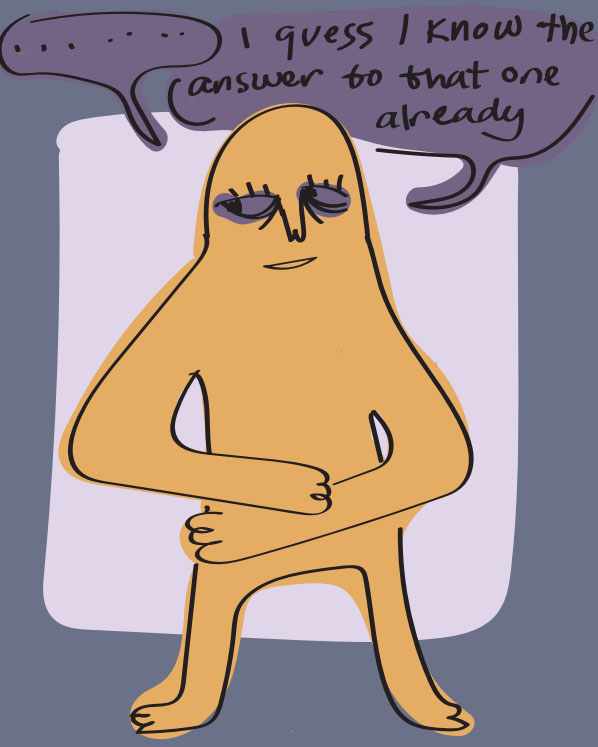
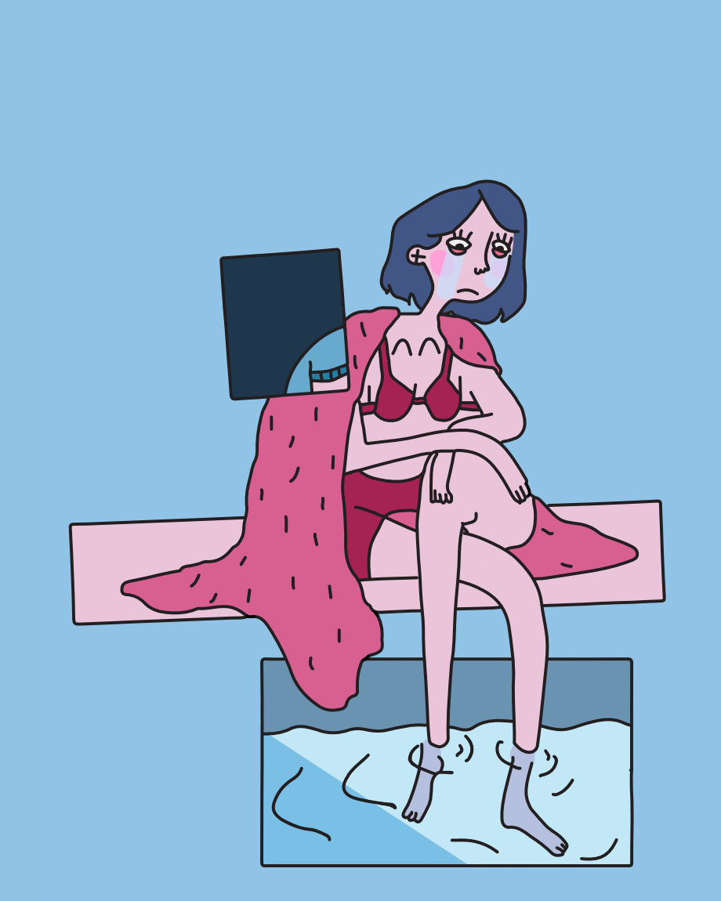

Projects
I Keep Being Told That There Are Better Things
This is a more recent comic that I made on self identity and the conflicting ideas
that you are only you as much as the you that people know versus the idea of a personal sense-of-self
being the most you. As well, how both ideas can affect that same sense of self that they ask for
refection on.
This has a lot more parallels to my more recent work as I created it early 2024. Around
then, I was starting to put more of a focus on how I was delivering writing. As writing was becoming
more important in my work, I decided that it needed to be examined more properly as a visual
that could be used to convey thought and feeling just as much as traditional visuals.
You can click on the image to download the comic.
I Guess I Just Don't Owe You Anything Anymore
 This is a comic that I made over 2022-2023. It covers feelings of transgender-based struggles with
identity. The main focus is the cycle of trying to figure out who you are exactly as a
person and how other people see you. The feeling of coming back to the same place and
the same conclusions every time, but not being ready to face what those conclusions
actually mean or externalize them as actionable steps to take to arrive somewhere new.
Visually, I was just starting to really investigate how I could improve my use of color and panels/
sectioning to aid in telling story.
Richard McGuire was someone that I looked
to for a lot of inspiration when creating this piece.
You can click on the image to download the comic.